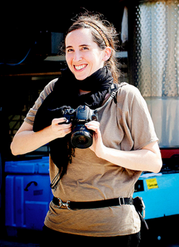
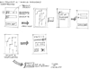
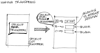
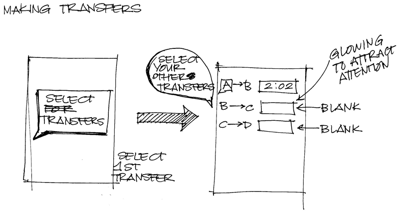
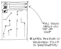
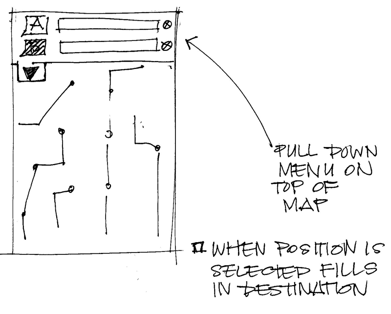

-
Allowing mobile workers to nap on the subway since February 2011.
In any city, mobile workers waste a lot of time while riding public transportation between work sites and clients. They try to use their time wisely, but having to pay attention to the upcoming transfers and such, this time is never truly used productively.
Here comes SubwaySiesta - an iPhone application which allows users to use a timer to countdown the amount of time left to their next stop. This allows the mobile workers to focus more on whatever they want during their travel time and be alerted when their stop is approaching. This will help to make better use of commuters' time, and ensure that our traveling workers get where they need to be on time.
SubwaySiesta also takes care of the basics in that it acts as a New York City public transit map, and provides a transit schedule relative to the current time to help keep the mobile workers on time. -
Persona
Meet Rachel Wells
- 27 year old interior designer
- Lives in Little Italy (Downtown NYC)
- Travels frequently to client's locations, but does not own her own car
Tasks
- Visits clients off-site
- Commutes all around New York City
Needs to Know
- What buses and train lines to take
- How to get back to her home once she is done for the day
- How long subway rides will take
Life Goals
- Get around the city with ease
- Maintain and build a professional relationship with clients
Experience Goals
- Needs reliable transportaiton
- Makes efficient use of her time
End Goals
- Get to client's site ontime
- Able to zone out or get work done while commuting
-
Research
Discovering the Need
In going over the four possible user tasks, Group 2 began to think of our own past experiences to see what kind of an application we wanted to develop. Amanda, having just spent her summer in New York, realized that there was a real need for an application to help out mobile workers who took the subway (or any type of public transportation). So much time is spent sitting on the subway, and having an application that would help people feel a sense of peace so that they wouldn't miss their stop while trying to nap (for example) would be really useful. And so, the idea for SubwaySiesta was born.
Developing the Functionality
During our original meetings, we had to decide exactly what our application would do to set it apart from the other applications on the market. Amanda had used one application (NYCMate) to help her navigate the subway system, so we had to make sure that SubwaySiesta was bringing something new to the table. Other applications did not have this timer feature counting down to the final destination, which set us apart from the competition. We knew that we had to do this well though, otherwise this application would not become popular.
Gathering Feedback from NYC Commuters
We were able to gather feedback from people who work in New York City to see how they felt about an application that would count down the time remaining to their desired destination. It was made clear that people who live in and around the city thought that this would be a very useful application to allow them to focus on things other than their upcoming stop.
-
Paper Prototypes & Wireframes
  × ×Presentations
Subway Siesta Final Presentation (PDF, 1mb)
Subway Siesta Final Wireframes (PDF, 6.5mb)